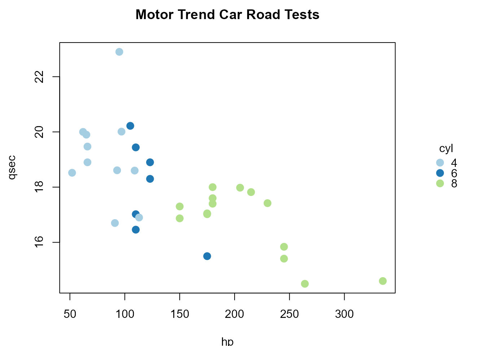

fplot() is designed to combine a standard R plot with a categorical (factor) legend.
Analogous to splot(), splits the plotting region into a main panel and a
legend panel, and uses legend() to draw the labels with their colors and symbols.
Usage
fplot(
labels,
col = hcld.colors(length(labels)),
type = c("box", "point", "line"),
pch = 16,
lty = 1,
lwd = 2,
cex = 1,
border = col,
pt.cex = cex * 1.5,
seg.len = 1.5,
horizontal = FALSE,
legend.shrink = 1,
legend.width = NULL,
legend.mar = NULL,
legend.lab = NULL,
legend.x = "center",
bigplot = NULL,
smallplot = NULL,
add = FALSE,
...
)Arguments
- labels
vector with the category labels.
- col
colors associated with each level (same order as
labels). Defaults tohcld.colors().- type
type of symbols shown in the legend:
"box"for filled color boxes (as in a classic factor-level legend),"point"for points, or"line"for line segments.- pch
plotting ‘character’ (symbol) used when
type = "point".- lty, lwd
line types and widths for lines appearing in the legend, when
type = "line".- cex
text/symbol size in the legend.
- border, pt.cex, seg.len
additional
legend()parameters, also used to estimate the required legend width/height. The default values are:border = col,pt.cex = cex * 1.5andseg.len = 1.5.- horizontal
logical; if
FALSE(default) legend will appear on the right side. IfTRUEthe legend will be along the bottom.- legend.shrink
amount to shrink the size of legend relative to the full height or width of the plot.
- legend.width, legend.mar
control the size and margin of the legend panel, as in
splot(). If left asNULL(default), they are computed automatically following the same character-size logic thatlegend()itself uses internally.- legend.lab
legend title.
- legend.x
legend location relative to the legend panel (argument
xoflegend()). Possible values are:"center"(default),"bottomright","bottom","bottomleft","left","topleft","top","topright"or"right".- bigplot, smallplot
plot coordinates for main and legend panels. If not passed these will be determined within the function.
- add
logical; if
TRUEthe legend is just added to the existing plot (the graphical parameters are not changed).- ...
additional arguments passed to
legend().
Value
fplot() invisibly returns a list with components: bigplot,
smallplot, old.par, col and labels (par(old.par) will reset plot
parameters to the values before entering the function).
Examples
# Plot equivalent to fpoints():
f <- as.factor(mtcars$cyl)
res <- fplot(levels(f), col = cat.colors(f), type = "point",
legend.lab = "cyl")
with(mtcars,
plot(hp, qsec, col = fcolor(f, col = res$col),
pch = 16, cex = 1.5, main = "Motor Trend Car Road Tests")
)

par(res$old.par) # restore graphical parameters